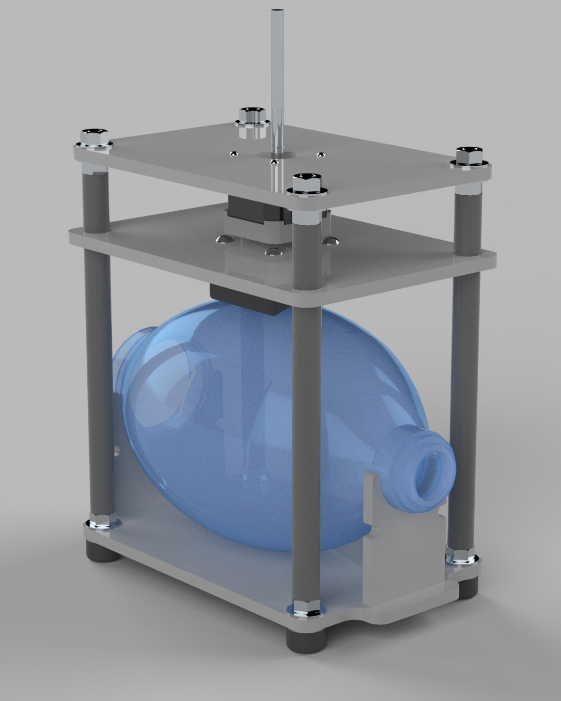
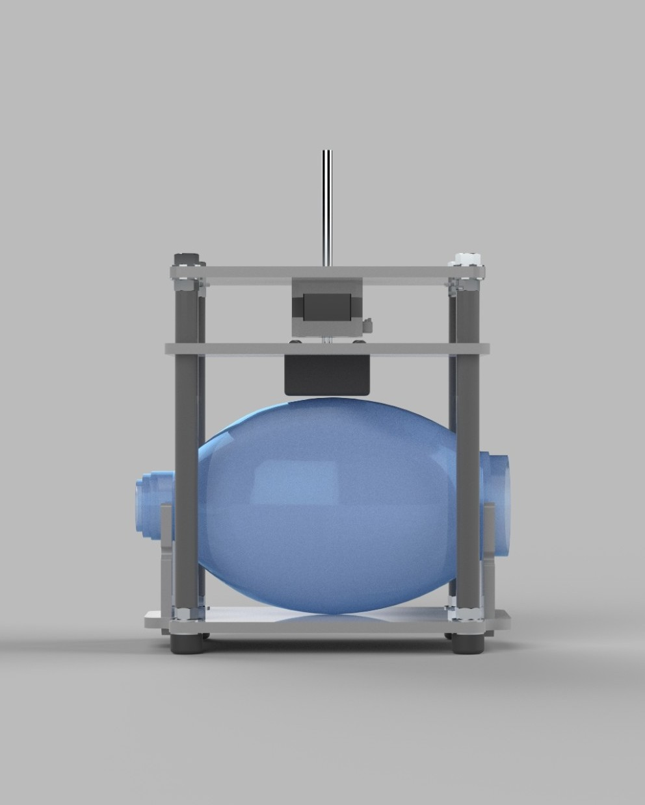

Engineering · Medical Device
Bag Valve Mask Ventilator
Emergency breathing relief for COVID-19 patients.
Our goal was to design an affordable, easy-to-assemble emergency ventilator for use in developing nations. To achieve this, we utilized a self-inflating bag resuscitator (BVM) as the air pump, with a linear actuator to compress the BVM. Key components of the design are produced using 3D printing or a laser cutter.
To enhance efficiency and durability, we integrated thrust bearings between the motor shaft and the compression mechanism. This addition reduces friction from the linear actuator's lead screw rotation, minimizing wear on contact surfaces and increasing the system's longevity.
- Team Spencer White · Evan Kirk
- Drive Linear actuator
- Fabrication 3D printing · Laser cutting

